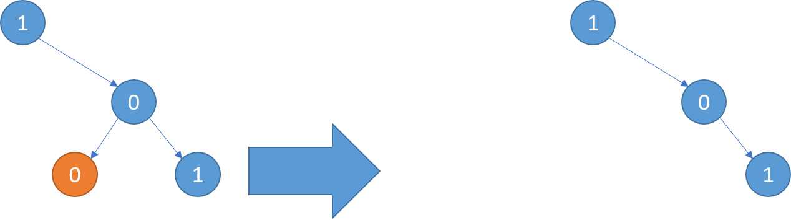
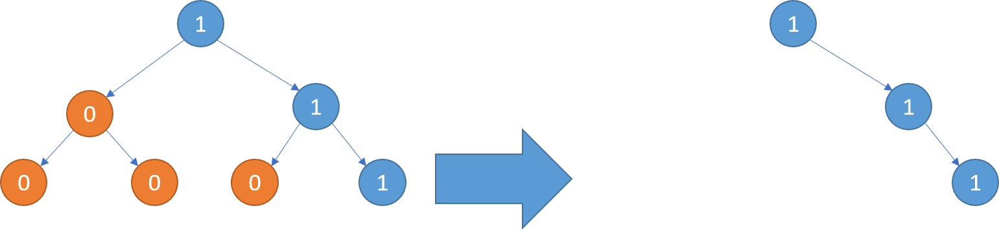
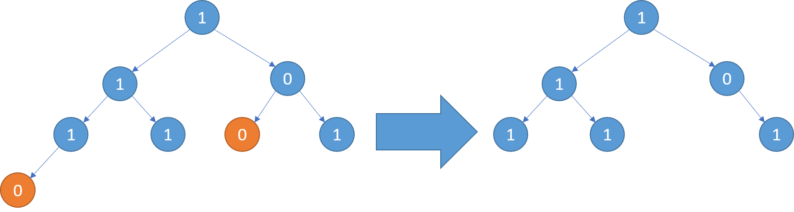

814. 二叉树剪枝
后序遍历：左右先各自剪枝；剪完若左右都空且自己是 0，说明整棵子树不含 1，置 null。
思路
- 后序：先
root.left = pruneTree(root.left)、右同理——孩子的去留定了才轮到自己。 - 剪枝判据：
左右都空 且 val == 0⟺ 这棵子树一个 1 都没有。 - 返回
null就是把整棵子树剪掉；根结点同样要过这道判据（全 0 树返回空树）。 - 值为 0 的结点只要子树里有 1 就保留（判据里的「左右都空」兜住了这种情况）。
图解
最优解
1class Solution {2 public TreeNode pruneTree(TreeNode root) {3 // 后序：先把左右子树各自修剪干净，再决定自己去留4 if (root == null) return null;5 root.left = pruneTree(root.left);6 root.right = pruneTree(root.right);7 // 左右都空且自己是 0：整棵子树不含 1，剪掉8 if (root.left == null && root.right == null && root.val == 0) return null;9 return root;10 }11}题目
给你二叉树的根结点 root ，此外树的每个结点的值要么是 0 ，要么是 1 。
返回移除了所有不包含 1 的子树的原二叉树。
节点 node 的子树为 node 本身加上所有 node 的后代。
示例 1：

输入：root = [1,null,0,0,1] 输出：[1,null,0,null,1] 解释： 只有红色节点满足条件“所有不包含 1 的子树”。 右图为返回的答案。
示例 2：

输入：root = [1,0,1,0,0,0,1] 输出：[1,null,1,null,1]
示例 3：

输入：root = [1,1,0,1,1,0,1,0] 输出：[1,1,0,1,1,null,1]
提示：
- 树中节点的数目在范围
[1, 200]内 Node.val为0或1
题面取自力扣当前版本。
数据快照 2026-11-04。题面版权归力扣所有，本站点仅供本人学习使用，请勿对外发布。